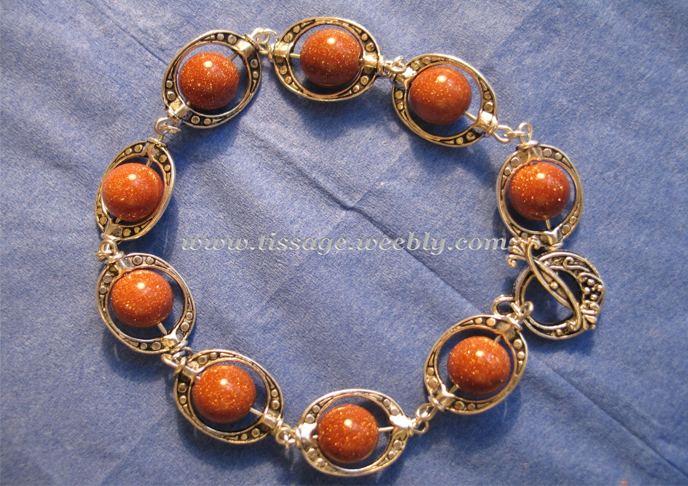

Sidabrinės apyrankės internetu | silvera.lt Apyrankė – rankų papuošalas, vienas seniausių puošmenų, mūvima ant riešo. Dažniausiai jų gaminimui naudojamos tokios medžiagas kaip metalas, oda, medis, silikonas ir kitos medžiagos. Vyriškos apyrankės - vienas populiariausių vyriškų aksesuarų visame pasaulyje. Apyrankės atreikpia dėmesį ir suteikia išskirtinumo, jų dėka vyrai pagyvina savo aprangą ir taip ...
Apyrankės|SURASTA.lt Apyrankes galite įsigyti internetu arba parduotuvėje Kaune. Šioje kategorijoje rasite tik karštas šio sezono naujienas, su kuriomis bus negėda pasirodyti nei jaunimo vakarėlyje nei ištaigingoje puotoje ar verslo susitikime. Pasistengsime, kad apyrankes pagal savo skonį čia rastų visi.
Vyriškos apyrankės | Apyrankės vyrams internetu Stilingos vyriškos apyrankės yra puikus aksesuaras kiekvienam vyrui. Apyrankes drąsiai galima derinti vieną prie kitos ir nebijoti eksperimentuoti. Dauguma apyrankių atrodo puikiai ne tik prie laisvalaikio, bet ir prie formalios aprangos.
Apyrankės, papuosalai - papuosalu-parduotuve.lt Odinės apyrankės - tai papuošalų rūšis kuri labai seniai buvo madinga ir tokia išliks dar ilgai. Odines apyrankes nešioja tiek vyrai, tiek ir moterys. Jos tinka tiek solidaus ir konstruktyvaus stiliaus žmonėms, tiek ir ekstravagantiškiems šiuolaikiškiems jaunuoliams. Čia rasite tiek natūralios, tiek dirbtinės odos gaminių.
Odinės, sidarinės apyrankės internetu - Papuošalai internetu apyrankes pagal horoskopa (1) apyrankė Liūtams (1) apyrankė avantiurino (1) apyrankė avinui (2) apyrankė is naturaliu akmeneliu (1) apyrankė iš akmeneliu (1) apyrankė iš amazonito (1) apyrankė iš granatų (1) apyrankė iš labradorito (1) apyrankė iš naturaliu akmeneliu (2) apyrankė iš naturalu akmeneliu (1)
Vyriškos apyrankės Prabangiųjų kategorijai priklausančias apyrankes dabina ištisos briliantų kompozicijos. Briliantai – brangūs, prabangūs, tobuli brangakmeniai, pavergiantys spindesiu ir tyrumu. Toks papuošalas idealiai tiks bet kokio amžiaus moteriai. Kuklesnės auksinės apyrankės, turinčios mažiau briliantų, derės klasikiniam, oficialiam ir ...
Apyrankės pagal Zodiako ženklą - DiDesign Sidabrinės apyrankės – puiki dovana ypatingomis progomis Sidabras yra vienas labiausiai vertinamų tauriųjų metalų, tad nieko nuostabaus, kad iš jo pagaminti papuošalai yra tokie populiarūs.
Apyrankės - auksaspigiau.lt Subtilios ir mielos, minimalistinio elegantiško stiliaus rankų darbo apyrankės skirtos moterims, mėgstančioms šiuolaikinį minimalizmą.
Style4u | Apyrankės | Vyriški papuošalai | Papuošalai ... Vyriškas apyrankes galite derinti kartu su moteriškomis taip sudarydami puikų poros rinkinį romantiškai progai. Mūsų elektroninėje parduotuvėje siūlomos ne tik vyriškos apyrankės, bet ir įvairaus ir išskirtinio dizaino grandinėlės bei auskarai.

Skip to content Apyrankės Porų apyrankės Akiniai nuo saulės Diržai Piniginės Sąsagos Klasiškas vyrukas Moterims Parduotuvė Paskyra Krepšelis Kontaktai Straipsniai info@klasiskasvyras.lt Parduotuvė Paskyra Krepšelis Kontaktai Straipsniai Prisijungti / Registruotis Pirkinių krepšelis / 0.00 € 0 Apyrankės Porų apyrankės Akiniai nuo saulės Diržai Piniginės Sąsagos Klasiškas vyrukas Moterims Pradžia Apyrankės
Apyrankės
Stilingos vyriškos apyrankės yra puikus aksesuaras kiekvienam vyrui. Apyrankes drąsiai galima derinti vieną prie kitos ir nebijoti eksperimentuoti. Dauguma apyrankių atrodo puikiai ne tik prie laisvalaikio, bet ir prie formalios aprangos.
Akiniai nuo saulės Apyrankės Diržai Kaklo papuošalai Kita Klasiškas vyrukas Kortelių dėklai Peteliškės ir kaklaraiščiai Piniginės Sąsagos Vyriškos rankinės
Naujausi straipsniai
10 ženklų, kad pašnekovas tau meluoja
Mokslininkų patarimai, kaip sulaukti daugiau sėkmės pažinčių svetainėse
Kaip priaugti svorio?
10 įdomiausių faktų apie kaklaraiščius ir peteliškes
Pirkėjo skiltis
Paskyra Mano užsakymai Krepšelis
Informacija
Kontaktai Prekių grąžinimas Taisyklės Pristatymo būdai Privatumo politika